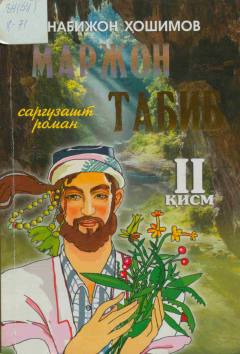

MTMarjoy tabib sarguzasht romanining ikkinchi qismi.
Ushbu asar Nabijon Hoshimovning sarguzasht romanining ikkinchi qismi bo'lib, unda Marjoy tabib obrazi orqali xalq tabobati, tabiat bilan hamnafas yashash va insoniy taqdirlar hikoya qilinadi. Muallif asar davomida qahramonlarning hayotiy sinovlari va muhabbat tarixini badiiy to'qimalar orqali yoritib beradi.